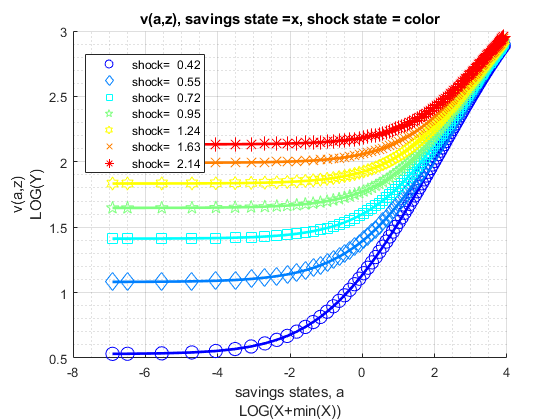
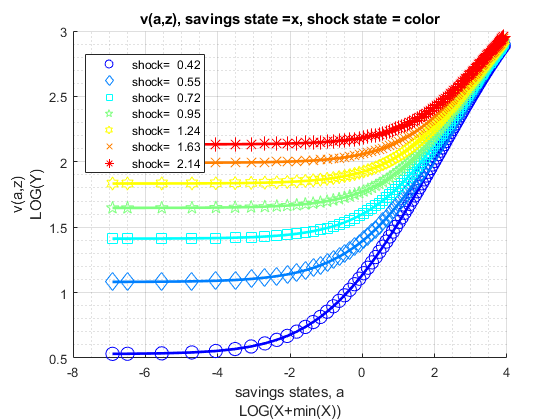

FF_VFI_AZ_BISEC_VEC (vectorized bisection exact choice) Dynamic Savings Problem
Fast vectorized solution for solving the dynamic programming problem with fixed asset state space, but continuous asset choices. Solution obtained via bi(multi)-section. Solves for the fraction of resources to save, this is then translated to asset choice level
Uses first order conditions. The first order condition has two components: let u(c(ap,a,z)) be current utility, let beta*EV(ap|z) be the expected value from making choice ap given current shock z. d(u)/d(ap) is analytical; the EV(ap|z) are a set of linear splines each spline for each shock point z, dEV/d(ap) are just the slopes for each spline segment. With both partials, we can easily use bisection to solve for optimal exact choices.
Note that d(u)/d(ap) is continuous, but dEV/d(ap) is a step-function. This means that while value will be strictly increasing in a and z: dv/da>0, dv/dz>0. However, dc/da is not strictly increasing, but could equal to zero. The linear interpolation means that the marginal propensity to consume is not monotone. These show the limit to this 'exact' solution algorithm. They are exact given the discretized asset grid.
Obtains policy and value functions. Shock is AR(1). This function is looped, and extremely slow when state-space increases in size. This function is useful as a working template for developing models that rely on asset and shocks.
* MP_PARAMS controls model preference, prices, shock and asset grid parameters. * MP_SUPPORT controls convergence criterion, printing and summary controls
mp_params = containers.Map('KeyType','char', 'ValueType','any');
mp_params('fl_crra') = 1.5;
mp_params('fl_beta') = 0.95;
mp_params('fl_w') = 1.05;
mp_params('fl_r') = 0.03;
mp_params('fl_a_min') = 0;
mp_params('fl_a_max') = 50;
mp_params('it_a_n') = 25;
mp_params('st_grid_type') = 'grid_powerspace';
mp_params('fl_z_persist') = 0.60;
mp_params('fl_shk_std') = 0.10;
mp_params('it_z_n') = 5;
mp_params('st_grid_type') = 'grid_powerspace'; mp_support = containers.Map('KeyType','char', 'ValueType','any');
mp_support('fl_lowestc') = -10e10;
mp_support('it_maxiter_val') = 500;
mp_support('fl_tol_val') = 10e-5;
% printer various information
mp_support('bl_timer') = true;
mp_support('bl_print_params') = false;
mp_support('bl_print_iterinfo') = false;
% These names must match keys of mp_solu: v=value, ap=savings choice,
c=consumption, y=income, coh=cash-on-hand (income + savings),
savefraccoh = ap/coh.
% what outcomes to store in the mp_solu for export
mp_support('ls_slout') = {'v', 'ap', 'c', 'y', 'coh', 'savefraccoh'};
% outcome for ff_container_map_display
mp_support('ls_ffcmd') = {'v', 'ap', 'c', 'y', 'coh', 'savefraccoh'};
% outcome for ff_summ_nd_array
mp_support('ls_ffsna') = {'v', 'ap', 'c', 'y', 'coh', 'savefraccoh'};
% outcome for ff_graph_grid
mp_support('ls_ffgrh') = {'v', 'ap', 'c', 'y', 'coh', 'savefraccoh'};
% outcome for ff_summ_nd_array
mp_support('ffsna_opt_it_row_n_keep') = 10;
% outcome for ff_summ_nd_array
mp_support('ffsna_opt_it_col_n_keep') = 9;[MP_VALPOL_OUT, FLAG] = FF_VFI_AZ_BISEC_VEC() default savings and shock model simulation
[MP_VALPOL_OUT, FLAG] = FF_VFI_AZ_BISEC_VEC(MP_PARAMS) change model parameters through MP_PARAMS
[MP_VALPOL_OUT, FLAG] = FF_VFI_AZ_BISEC_VEC(MP_PARAMS, MP_SUPPORT) change various printing, storaging, graphing, convergence etc controls through MP_SUPPORT
[MP_VALPOL_OUT, FLAG] = FF_VFI_AZ_BISEC_VEC(MP_PARAMS, MP_SUPPORT, MP_SUPPORT_GRAPH) also changing graphing options, see the FF_GRAPH_GRID function for what key value paris can be specified.
see also FX_VFI_AZ_BISEC_VEC, FF_VFI_AZ_BISEC_LOOP, FF_VFI_AZ_LOOP, FF_VFI_AZ_VEC, FF_VFI_AZ_MZOOM_LOOP, FF_VFI_AZ_MZOOM_VEC, FF_GRAPH_GRID
Contents
- Set Default and Parse Inputs
- Default Model Parameters
- Parse mp_params
- Generate A and Z Grids
- Default Support Parameters
- Whether Additional Outcomes Should be Stored
- Initialize Matrix
- Define Functions
- Compute Fixed Resource Matrix by States
- Dynamically Solve
- Convergence Results
- Results for Printing, and Graphing
- Print Parameter Information
- Show Value Function Convergence Information
- ls_ffcmd summary
- ls_ffsna summarize full
- ls_ffgrh graph
- Store Results for Output
function [mp_valpol_out, flag] = ff_vfi_az_bisec_vec(varargin)
Set Default and Parse Inputs
if (~isempty(varargin)) if (length(varargin) == 1) [mp_params_ext] = varargin{:}; elseif (length(varargin) == 2) [mp_params_ext, mp_support_ext] = varargin{:}; end else close all; mp_support_ext = containers.Map('KeyType','char', 'ValueType','any'); mp_support_ext('bl_timer') = true; mp_support_ext('bl_print_params') = true; mp_support_ext('bl_print_iterinfo') = true; mp_support_ext('ls_ffcmd') = {'v', 'ap', 'c', 'y', 'coh', 'savefraccoh'}; mp_support_ext('ls_ffsna') = {'ap'}; mp_support_ext('ls_ffgrh') = {'v', 'ap', 'c', 'y', 'savefraccoh'}; mp_support_ext('ls_store') = {'v', 'ap', 'c', 'y', 'coh'}; mp_support_ext('ffsna_opt_it_row_n_keep') = 10; mp_support_ext('ffsna_opt_it_col_n_keep') = 9; end
Default Model Parameters
support_map
mp_params = containers.Map('KeyType','char', 'ValueType','any'); mp_params('fl_crra') = 1.5; mp_params('fl_beta') = 0.95; mp_params('fl_w') = 1.40; mp_params('fl_r') = 0.04; mp_params('fl_a_min') = 0; mp_params('fl_a_max') = 50; mp_params('it_a_n') = 100; mp_params('st_grid_type') = 'grid_powerspace'; mp_params('fl_z_persist') = 0.80; mp_params('fl_shk_std') = 0.20; mp_params('it_z_n') = 7; % override default support_map values if (length(varargin)>=1) mp_params = [mp_params; mp_params_ext]; end
Parse mp_params
params_group = values(mp_params, {'fl_crra', 'fl_beta'});
[fl_crra, fl_beta] = params_group{:};
params_group = values(mp_params, {'fl_w', 'fl_r'});
[fl_w, fl_r] = params_group{:};
params_group = values(mp_params, {'fl_a_min', 'fl_a_max', 'it_a_n', 'st_grid_type'});
[fl_a_min, fl_a_max, it_a_n, st_grid_type] = params_group{:};
params_group = values(mp_params, {'fl_z_persist', 'fl_shk_std', 'it_z_n'});
[fl_z_persist, fl_shk_std, it_z_n] = params_group{:};
Generate A and Z Grids
Same min and max and grid points
[ar_a] = ff_saveborr_grid(fl_a_min, fl_a_max, it_a_n, st_grid_type); ar_a = ar_a'; % shock vector and transition, normalize mean exp(shk) to 1 [ar_z, mt_z_trans] = ffy_rouwenhorst(fl_z_persist, fl_shk_std, it_z_n); % normalize mean of exp to 1, fl_shk_std does not shift mean. ar_z_stationary = mt_z_trans^1000; ar_z_stationary = ar_z_stationary(1,:); fl_labor_agg = ar_z_stationary*exp(ar_z); ar_z = exp(ar_z')/fl_labor_agg;
Default Support Parameters
support_map
mp_support = containers.Map('KeyType','char', 'ValueType','any'); % Model Control mp_support('fl_lowestc') = -1e10; % Iteration Control mp_support('it_maxiter_val') = 500; mp_support('fl_tol_val') = 1e-5; % printer various information mp_support('bl_timer') = true; mp_support('bl_print_params') = false; mp_support('bl_print_iterinfo') = false; % These names must match keys of mp_solu: % what outcomes to store in the mp_solu for export mp_support('ls_slout') = {'v', 'ap', 'c', 'y', 'coh', 'savefraccoh'}; % outcome for ff_container_map_display mp_support('ls_ffcmd') = {'ap'}; % outcome for ff_summ_nd_array mp_support('ls_ffsna') = {}; % outcome for ff_graph_grid mp_support('ls_ffgrh') = {}; % outcome for ff_summ_nd_array mp_support('ffsna_opt_it_row_n_keep') = 10; % outcome for ff_summ_nd_array mp_support('ffsna_opt_it_col_n_keep') = 9; % override default support_map values if (length(varargin)>=2 || isempty(varargin)) mp_support = [mp_support; mp_support_ext]; end % Parse mp_support params_group = values(mp_support, {'fl_lowestc'}); [fl_lowestc] = params_group{:}; params_group = values(mp_support, {'it_maxiter_val', 'fl_tol_val'}); [it_maxiter_val, fl_tol_val] = params_group{:}; params_group = values(mp_support, {'bl_timer', 'bl_print_params', 'bl_print_iterinfo'}); [bl_timer, bl_print_params, bl_print_iterinfo] = params_group{:}; params_group = values(mp_support, ... {'ls_slout', 'ls_ffcmd', 'ls_ffsna', 'ls_ffgrh',... 'ffsna_opt_it_row_n_keep', 'ffsna_opt_it_col_n_keep'}); [ls_slout, ls_ffcmd, ls_ffsna, ls_ffgrh,... ffsna_opt_it_row_n_keep, ffsna_opt_it_col_n_keep] = params_group{:};
Whether Additional Outcomes Should be Stored
when state space are large, might not be a good idea to store all possible model output matrixes, but could be controlled with these if things should be outputed. If bl_store_more = true, will output store all additional possible outcomes if bl_vfi_store_all = true. Internally, which output becomes tabular or graphical controled by ls_ffcmd, ls_ffsna, and ls_ffgrh.
% If to store additional outcomes cl_more = {'c', 'y', 'coh', 'savefraccoh'}; ar_find_slout = cell2mat(cellfun(@(m) find(strcmp(ls_slout, m)), cl_more, 'UniformOutput', false)); ar_find_ffcmd = cell2mat(cellfun(@(m) find(strcmp(ls_ffcmd, m)), cl_more, 'UniformOutput', false)); ar_find_ffsna = cell2mat(cellfun(@(m) find(strcmp(ls_ffsna, m)), cl_more, 'UniformOutput', false)); ar_find_ffgrh = cell2mat(cellfun(@(m) find(strcmp(ls_ffgrh, m)), cl_more, 'UniformOutput', false)); if (length(ar_find_slout) + length(ar_find_ffcmd) + length(ar_find_ffsna) + length(ar_find_ffgrh) >1) bl_store_more = true; end
Initialize Matrix
mt_val_lst = zeros(length(ar_a),length(ar_z)); mt_val_cur = mt_val_lst; mt_aprime_lst = zeros(length(ar_a),length(ar_z)); mt_aprime_cur = mt_aprime_lst; mt_aprime_idx = zeros(length(ar_a),length(ar_z)); ar_val_diff_norm = zeros([it_maxiter_val, 1]); ar_pol_diff_norm = zeros([it_maxiter_val, 1]); mt_pol_perc_change = zeros([it_maxiter_val, length(ar_z)]); if (bl_store_more) mt_c = zeros(length(ar_a),length(ar_z)); mt_y = zeros(length(ar_a),length(ar_z)); mt_coh = zeros(length(ar_a),length(ar_z)); end
Define Functions
% Current Function and their Derivatives if(fl_crra == 1) f_util = @(c) log(c); f_du_da = @(c) -1./(c); else f_util = @(c) (((c).^(1-fl_crra)-1)./(1-fl_crra)); f_du_da = @(c) -1./(c.^fl_crra); end % Utility f_U = @(u, Ev) (u + fl_beta.*Ev); f_FOC = @(duda, devda) (duda + fl_beta.*devda); % resources f_y = @(z, b) (z*fl_w + b.*(fl_r)); f_coh = @(z, b) (z*fl_w + b.*(1+fl_r)); f_cons = @(z, b, bprime) (f_coh(z, b) - bprime);
Compute Fixed Resource Matrix by States
% C1. Resource Matrix Broadcast: length(ar_a) by length(ar_z) matrix mt_resources = f_coh(ar_z, ar_a'); mt_z_ctr = repmat(1:length(ar_z), [length(ar_a), 1]); % C2. Flatten the resource matrix, amz = a mesh z: ar_resources_amz = mt_resources(:); ar_z_ctr_amz = mt_z_ctr(:);
Dynamically Solve
if (bl_timer) tic end % initialize fl_diff = 1; it_iter = 0; % After converge, one more iteration to store results bl_continue = true; bl_converged = false; % Loop 0, continuous VFI iteration until convergence while bl_continue % A. Solve For EV(ap,z) = EV(ap,zp|z)f(zp|z) for all possible ap points % Note that EV(ap,z) is unrelated to current asset state a mt_ev_ap_z = zeros(length(ar_a), length(ar_z)); for it_z_ctr = 1:length(ar_z) for it_ap_ctr = 1:length(ar_a) % Add to each cell of mt_ev_ap_z, integrating over f(zp|z) for it_zprime_ctr = 1:length(ar_z) mt_ev_ap_z(it_ap_ctr, it_z_ctr) = mt_ev_ap_z(it_ap_ctr, it_z_ctr) ... + mt_z_trans(it_z_ctr,it_zprime_ctr)*mt_val_lst(it_ap_ctr,it_zprime_ctr); end end end % B. z specific EV Slope: EV(ap,z)/d(ap) % Given the discretized EV matrix structure, we have a matrix of % splines, get the slopes of the spline segments. These are the % derivatives of the marginal effects of additional savings for each % splinde segment conditional on shock. mt_deri_dev_dap = diff(mt_ev_ap_z)./diff(ar_a'); % C. Generate Vectorized FOC Evaluator % x = fl_aprime_frac fc_ffi_vec_foc_u_v_ap = @(x) ffi_vec_foc_u_v_ap(... x, ar_a, ... ar_resources_amz, ar_z_ctr_amz, mt_deri_dev_dap, ... f_du_da, f_FOC); % D. Solve via Bisection [ar_opti_saveborr_frac_amz] = ff_optim_bisec_savezrone(fc_ffi_vec_foc_u_v_ap); % E. Evaluate at Bounds ar_nan_idx = isnan(ar_opti_saveborr_frac_amz); if(sum(ar_nan_idx)>0) ar_min_max = [0, 1-1E-5]; mt_val_min_max = zeros(sum(ar_nan_idx), length(ar_min_max)); for it_minmax = [1,2] [~, mt_val_min_max(:,it_minmax), ~] = ffi_vec_u_v_ap(... ar_min_max(it_minmax), ar_a, ... ar_resources_amz(ar_nan_idx), ar_z_ctr_amz(ar_nan_idx), ... mt_ev_ap_z, mt_deri_dev_dap, ... f_util, f_U); end [~, it_max] = max(mt_val_min_max, [], 2); ar_opti_saveborr_frac_amz(ar_nan_idx) = ar_min_max(it_max); end % F. Evaluate [ar_aprime_amz, ar_val_opti_amz, ar_c_opti_amz] = ffi_vec_u_v_ap(... ar_opti_saveborr_frac_amz, ar_a, ... ar_resources_amz, ar_z_ctr_amz, ... mt_ev_ap_z, mt_deri_dev_dap, ... f_util, f_U); % G. Record Results mt_val_cur = reshape(ar_val_opti_amz, [length(ar_a),length(ar_z)]); mt_aprime_cur = reshape(ar_aprime_amz, [length(ar_a),length(ar_z)]); % H. Save Additional Results if bl_converged [~, ar_opti_a_idx_amz] = min(abs(ar_a-ar_aprime_amz),[],2); mt_aprime_idx = reshape(ar_opti_a_idx_amz, [length(ar_a),length(ar_z)]); if (bl_store_more) mt_c = reshape(ar_c_opti_amz, [length(ar_a),length(ar_z)]); mt_y = mt_resources - ar_a'; mt_coh = mt_resources; end end % I. Iteration Convergence Checking % Continuation Conditions: it_iter = it_iter + 1; fl_diff = norm(mt_val_cur-mt_val_lst); diff_pol = norm(mt_aprime_cur-mt_aprime_lst); % Difference across iterations if (bl_print_iterinfo) ar_val_diff_norm(it_iter) = fl_diff; ar_pol_diff_norm(it_iter) = diff_pol; mt_pol_perc_change(it_iter, :) = sum((mt_aprime_cur ~= mt_aprime_lst))/(length(ar_a)); end % Update mt_val_lst = mt_val_cur; mt_aprime_lst = mt_aprime_cur; % Update Continue Criterion if bl_converged bl_continue = false; elseif(fl_diff <= fl_tol_val || it_iter >= it_maxiter_val) bl_converged = true; end % J. Print Iteration Record if(bl_print_iterinfo) disp(['ff_vfi_az_bisec_loop, it_iter:' num2str(it_iter) ... ', fl_diff:' num2str(fl_diff)]); end end
ff_vfi_az_bisec_loop, it_iter:1, fl_diff:34.289 ff_vfi_az_bisec_loop, it_iter:2, fl_diff:25.323 ff_vfi_az_bisec_loop, it_iter:3, fl_diff:20.9304 ff_vfi_az_bisec_loop, it_iter:4, fl_diff:17.9394 ff_vfi_az_bisec_loop, it_iter:5, fl_diff:15.6935 ff_vfi_az_bisec_loop, it_iter:6, fl_diff:13.917 ff_vfi_az_bisec_loop, it_iter:7, fl_diff:12.4643 ff_vfi_az_bisec_loop, it_iter:8, fl_diff:11.2479 ff_vfi_az_bisec_loop, it_iter:9, fl_diff:10.2122 ff_vfi_az_bisec_loop, it_iter:10, fl_diff:9.3176 ff_vfi_az_bisec_loop, it_iter:11, fl_diff:8.5366 ff_vfi_az_bisec_loop, it_iter:12, fl_diff:7.8485 ff_vfi_az_bisec_loop, it_iter:13, fl_diff:7.2373 ff_vfi_az_bisec_loop, it_iter:14, fl_diff:6.6912 ff_vfi_az_bisec_loop, it_iter:15, fl_diff:6.2007 ff_vfi_az_bisec_loop, it_iter:16, fl_diff:5.7574 ff_vfi_az_bisec_loop, it_iter:17, fl_diff:5.3549 ff_vfi_az_bisec_loop, it_iter:18, fl_diff:4.9878 ff_vfi_az_bisec_loop, it_iter:19, fl_diff:4.652 ff_vfi_az_bisec_loop, it_iter:20, fl_diff:4.3441 ff_vfi_az_bisec_loop, it_iter:21, fl_diff:4.0611 ff_vfi_az_bisec_loop, it_iter:22, fl_diff:3.8006 ff_vfi_az_bisec_loop, it_iter:23, fl_diff:3.5602 ff_vfi_az_bisec_loop, it_iter:24, fl_diff:3.3378 ff_vfi_az_bisec_loop, it_iter:25, fl_diff:3.1317 ff_vfi_az_bisec_loop, it_iter:26, fl_diff:2.9403 ff_vfi_az_bisec_loop, it_iter:27, fl_diff:2.7622 ff_vfi_az_bisec_loop, it_iter:28, fl_diff:2.5964 ff_vfi_az_bisec_loop, it_iter:29, fl_diff:2.4418 ff_vfi_az_bisec_loop, it_iter:30, fl_diff:2.2975 ff_vfi_az_bisec_loop, it_iter:31, fl_diff:2.1626 ff_vfi_az_bisec_loop, it_iter:32, fl_diff:2.0364 ff_vfi_az_bisec_loop, it_iter:33, fl_diff:1.9183 ff_vfi_az_bisec_loop, it_iter:34, fl_diff:1.8077 ff_vfi_az_bisec_loop, it_iter:35, fl_diff:1.704 ff_vfi_az_bisec_loop, it_iter:36, fl_diff:1.6068 ff_vfi_az_bisec_loop, it_iter:37, fl_diff:1.5155 ff_vfi_az_bisec_loop, it_iter:38, fl_diff:1.4298 ff_vfi_az_bisec_loop, it_iter:39, fl_diff:1.3493 ff_vfi_az_bisec_loop, it_iter:40, fl_diff:1.2736 ff_vfi_az_bisec_loop, it_iter:41, fl_diff:1.2023 ff_vfi_az_bisec_loop, it_iter:42, fl_diff:1.1353 ff_vfi_az_bisec_loop, it_iter:43, fl_diff:1.0722 ff_vfi_az_bisec_loop, it_iter:44, fl_diff:1.0128 ff_vfi_az_bisec_loop, it_iter:45, fl_diff:0.95684 ff_vfi_az_bisec_loop, it_iter:46, fl_diff:0.90412 ff_vfi_az_bisec_loop, it_iter:47, fl_diff:0.85445 ff_vfi_az_bisec_loop, it_iter:48, fl_diff:0.80762 ff_vfi_az_bisec_loop, it_iter:49, fl_diff:0.76347 ff_vfi_az_bisec_loop, it_iter:50, fl_diff:0.72183 ff_vfi_az_bisec_loop, it_iter:51, fl_diff:0.68255 ff_vfi_az_bisec_loop, it_iter:52, fl_diff:0.64548 ff_vfi_az_bisec_loop, it_iter:53, fl_diff:0.6105 ff_vfi_az_bisec_loop, it_iter:54, fl_diff:0.57748 ff_vfi_az_bisec_loop, it_iter:55, fl_diff:0.54631 ff_vfi_az_bisec_loop, it_iter:56, fl_diff:0.51687 ff_vfi_az_bisec_loop, it_iter:57, fl_diff:0.48907 ff_vfi_az_bisec_loop, it_iter:58, fl_diff:0.46281 ff_vfi_az_bisec_loop, it_iter:59, fl_diff:0.438 ff_vfi_az_bisec_loop, it_iter:60, fl_diff:0.41456 ff_vfi_az_bisec_loop, it_iter:61, fl_diff:0.39241 ff_vfi_az_bisec_loop, it_iter:62, fl_diff:0.37148 ff_vfi_az_bisec_loop, it_iter:63, fl_diff:0.35169 ff_vfi_az_bisec_loop, it_iter:64, fl_diff:0.33299 ff_vfi_az_bisec_loop, it_iter:65, fl_diff:0.3153 ff_vfi_az_bisec_loop, it_iter:66, fl_diff:0.29858 ff_vfi_az_bisec_loop, it_iter:67, fl_diff:0.28277 ff_vfi_az_bisec_loop, it_iter:68, fl_diff:0.26781 ff_vfi_az_bisec_loop, it_iter:69, fl_diff:0.25366 ff_vfi_az_bisec_loop, it_iter:70, fl_diff:0.24028 ff_vfi_az_bisec_loop, it_iter:71, fl_diff:0.22762 ff_vfi_az_bisec_loop, it_iter:72, fl_diff:0.21565 ff_vfi_az_bisec_loop, it_iter:73, fl_diff:0.20431 ff_vfi_az_bisec_loop, it_iter:74, fl_diff:0.19359 ff_vfi_az_bisec_loop, it_iter:75, fl_diff:0.18344 ff_vfi_az_bisec_loop, it_iter:76, fl_diff:0.17383 ff_vfi_az_bisec_loop, it_iter:77, fl_diff:0.16473 ff_vfi_az_bisec_loop, it_iter:78, fl_diff:0.15612 ff_vfi_az_bisec_loop, it_iter:79, fl_diff:0.14797 ff_vfi_az_bisec_loop, it_iter:80, fl_diff:0.14026 ff_vfi_az_bisec_loop, it_iter:81, fl_diff:0.13295 ff_vfi_az_bisec_loop, it_iter:82, fl_diff:0.12603 ff_vfi_az_bisec_loop, it_iter:83, fl_diff:0.11948 ff_vfi_az_bisec_loop, it_iter:84, fl_diff:0.11327 ff_vfi_az_bisec_loop, it_iter:85, fl_diff:0.10739 ff_vfi_az_bisec_loop, it_iter:86, fl_diff:0.10182 ff_vfi_az_bisec_loop, it_iter:87, fl_diff:0.09655 ff_vfi_az_bisec_loop, it_iter:88, fl_diff:0.091553 ff_vfi_az_bisec_loop, it_iter:89, fl_diff:0.086819 ff_vfi_az_bisec_loop, it_iter:90, fl_diff:0.082333 ff_vfi_az_bisec_loop, it_iter:91, fl_diff:0.078083 ff_vfi_az_bisec_loop, it_iter:92, fl_diff:0.074056 ff_vfi_az_bisec_loop, it_iter:93, fl_diff:0.070239 ff_vfi_az_bisec_loop, it_iter:94, fl_diff:0.066623 ff_vfi_az_bisec_loop, it_iter:95, fl_diff:0.063195 ff_vfi_az_bisec_loop, it_iter:96, fl_diff:0.059945 ff_vfi_az_bisec_loop, it_iter:97, fl_diff:0.056866 ff_vfi_az_bisec_loop, it_iter:98, fl_diff:0.053946 ff_vfi_az_bisec_loop, it_iter:99, fl_diff:0.051179 ff_vfi_az_bisec_loop, it_iter:100, fl_diff:0.048555 ff_vfi_az_bisec_loop, it_iter:101, fl_diff:0.046068 ff_vfi_az_bisec_loop, it_iter:102, fl_diff:0.043709 ff_vfi_az_bisec_loop, it_iter:103, fl_diff:0.041473 ff_vfi_az_bisec_loop, it_iter:104, fl_diff:0.039352 ff_vfi_az_bisec_loop, it_iter:105, fl_diff:0.037342 ff_vfi_az_bisec_loop, it_iter:106, fl_diff:0.035435 ff_vfi_az_bisec_loop, it_iter:107, fl_diff:0.033626 ff_vfi_az_bisec_loop, it_iter:108, fl_diff:0.031911 ff_vfi_az_bisec_loop, it_iter:109, fl_diff:0.030285 ff_vfi_az_bisec_loop, it_iter:110, fl_diff:0.028742 ff_vfi_az_bisec_loop, it_iter:111, fl_diff:0.027278 ff_vfi_az_bisec_loop, it_iter:112, fl_diff:0.02589 ff_vfi_az_bisec_loop, it_iter:113, fl_diff:0.024573 ff_vfi_az_bisec_loop, it_iter:114, fl_diff:0.023324 ff_vfi_az_bisec_loop, it_iter:115, fl_diff:0.022139 ff_vfi_az_bisec_loop, it_iter:116, fl_diff:0.021014 ff_vfi_az_bisec_loop, it_iter:117, fl_diff:0.019948 ff_vfi_az_bisec_loop, it_iter:118, fl_diff:0.018935 ff_vfi_az_bisec_loop, it_iter:119, fl_diff:0.017975 ff_vfi_az_bisec_loop, it_iter:120, fl_diff:0.017064 ff_vfi_az_bisec_loop, it_iter:121, fl_diff:0.016199 ff_vfi_az_bisec_loop, it_iter:122, fl_diff:0.015379 ff_vfi_az_bisec_loop, it_iter:123, fl_diff:0.0146 ff_vfi_az_bisec_loop, it_iter:124, fl_diff:0.013861 ff_vfi_az_bisec_loop, it_iter:125, fl_diff:0.01316 ff_vfi_az_bisec_loop, it_iter:126, fl_diff:0.012494 ff_vfi_az_bisec_loop, it_iter:127, fl_diff:0.011862 ff_vfi_az_bisec_loop, it_iter:128, fl_diff:0.011263 ff_vfi_az_bisec_loop, it_iter:129, fl_diff:0.010694 ff_vfi_az_bisec_loop, it_iter:130, fl_diff:0.010154 ff_vfi_az_bisec_loop, it_iter:131, fl_diff:0.0096412 ff_vfi_az_bisec_loop, it_iter:132, fl_diff:0.0091546 ff_vfi_az_bisec_loop, it_iter:133, fl_diff:0.0086927 ff_vfi_az_bisec_loop, it_iter:134, fl_diff:0.0082542 ff_vfi_az_bisec_loop, it_iter:135, fl_diff:0.0078379 ff_vfi_az_bisec_loop, it_iter:136, fl_diff:0.0074428 ff_vfi_az_bisec_loop, it_iter:137, fl_diff:0.0070677 ff_vfi_az_bisec_loop, it_iter:138, fl_diff:0.0067116 ff_vfi_az_bisec_loop, it_iter:139, fl_diff:0.0063735 ff_vfi_az_bisec_loop, it_iter:140, fl_diff:0.0060525 ff_vfi_az_bisec_loop, it_iter:141, fl_diff:0.0057478 ff_vfi_az_bisec_loop, it_iter:142, fl_diff:0.0054584 ff_vfi_az_bisec_loop, it_iter:143, fl_diff:0.0051837 ff_vfi_az_bisec_loop, it_iter:144, fl_diff:0.0049229 ff_vfi_az_bisec_loop, it_iter:145, fl_diff:0.0046752 ff_vfi_az_bisec_loop, it_iter:146, fl_diff:0.0044401 ff_vfi_az_bisec_loop, it_iter:147, fl_diff:0.0042168 ff_vfi_az_bisec_loop, it_iter:148, fl_diff:0.0040048 ff_vfi_az_bisec_loop, it_iter:149, fl_diff:0.0038035 ff_vfi_az_bisec_loop, it_iter:150, fl_diff:0.0036124 ff_vfi_az_bisec_loop, it_iter:151, fl_diff:0.0034309 ff_vfi_az_bisec_loop, it_iter:152, fl_diff:0.0032585 ff_vfi_az_bisec_loop, it_iter:153, fl_diff:0.0030948 ff_vfi_az_bisec_loop, it_iter:154, fl_diff:0.0029394 ff_vfi_az_bisec_loop, it_iter:155, fl_diff:0.0027918 ff_vfi_az_bisec_loop, it_iter:156, fl_diff:0.0026516 ff_vfi_az_bisec_loop, it_iter:157, fl_diff:0.0025185 ff_vfi_az_bisec_loop, it_iter:158, fl_diff:0.0023921 ff_vfi_az_bisec_loop, it_iter:159, fl_diff:0.002272 ff_vfi_az_bisec_loop, it_iter:160, fl_diff:0.002158 ff_vfi_az_bisec_loop, it_iter:161, fl_diff:0.0020497 ff_vfi_az_bisec_loop, it_iter:162, fl_diff:0.0019469 ff_vfi_az_bisec_loop, it_iter:163, fl_diff:0.0018492 ff_vfi_az_bisec_loop, it_iter:164, fl_diff:0.0017565 ff_vfi_az_bisec_loop, it_iter:165, fl_diff:0.0016684 ff_vfi_az_bisec_loop, it_iter:166, fl_diff:0.0015847 ff_vfi_az_bisec_loop, it_iter:167, fl_diff:0.0015053 ff_vfi_az_bisec_loop, it_iter:168, fl_diff:0.0014298 ff_vfi_az_bisec_loop, it_iter:169, fl_diff:0.0013581 ff_vfi_az_bisec_loop, it_iter:170, fl_diff:0.00129 ff_vfi_az_bisec_loop, it_iter:171, fl_diff:0.0012254 ff_vfi_az_bisec_loop, it_iter:172, fl_diff:0.001164 ff_vfi_az_bisec_loop, it_iter:173, fl_diff:0.0011056 ff_vfi_az_bisec_loop, it_iter:174, fl_diff:0.0010502 ff_vfi_az_bisec_loop, it_iter:175, fl_diff:0.00099762 ff_vfi_az_bisec_loop, it_iter:176, fl_diff:0.00094763 ff_vfi_az_bisec_loop, it_iter:177, fl_diff:0.00090016 ff_vfi_az_bisec_loop, it_iter:178, fl_diff:0.00085506 ff_vfi_az_bisec_loop, it_iter:179, fl_diff:0.00081223 ff_vfi_az_bisec_loop, it_iter:180, fl_diff:0.00077155 ff_vfi_az_bisec_loop, it_iter:181, fl_diff:0.00073291 ff_vfi_az_bisec_loop, it_iter:182, fl_diff:0.0006962 ff_vfi_az_bisec_loop, it_iter:183, fl_diff:0.00066134 ff_vfi_az_bisec_loop, it_iter:184, fl_diff:0.00062822 ff_vfi_az_bisec_loop, it_iter:185, fl_diff:0.00059676 ff_vfi_az_bisec_loop, it_iter:186, fl_diff:0.00056688 ff_vfi_az_bisec_loop, it_iter:187, fl_diff:0.0005385 ff_vfi_az_bisec_loop, it_iter:188, fl_diff:0.00051154 ff_vfi_az_bisec_loop, it_iter:189, fl_diff:0.00048593 ff_vfi_az_bisec_loop, it_iter:190, fl_diff:0.0004616 ff_vfi_az_bisec_loop, it_iter:191, fl_diff:0.00043849 ff_vfi_az_bisec_loop, it_iter:192, fl_diff:0.00041654 ff_vfi_az_bisec_loop, it_iter:193, fl_diff:0.00039569 ff_vfi_az_bisec_loop, it_iter:194, fl_diff:0.00037589 ff_vfi_az_bisec_loop, it_iter:195, fl_diff:0.00035707 ff_vfi_az_bisec_loop, it_iter:196, fl_diff:0.0003392 ff_vfi_az_bisec_loop, it_iter:197, fl_diff:0.00032223 ff_vfi_az_bisec_loop, it_iter:198, fl_diff:0.0003061 ff_vfi_az_bisec_loop, it_iter:199, fl_diff:0.00029078 ff_vfi_az_bisec_loop, it_iter:200, fl_diff:0.00027623 ff_vfi_az_bisec_loop, it_iter:201, fl_diff:0.00026241 ff_vfi_az_bisec_loop, it_iter:202, fl_diff:0.00024928 ff_vfi_az_bisec_loop, it_iter:203, fl_diff:0.0002368 ff_vfi_az_bisec_loop, it_iter:204, fl_diff:0.00022495 ff_vfi_az_bisec_loop, it_iter:205, fl_diff:0.0002137 ff_vfi_az_bisec_loop, it_iter:206, fl_diff:0.00020301 ff_vfi_az_bisec_loop, it_iter:207, fl_diff:0.00019285 ff_vfi_az_bisec_loop, it_iter:208, fl_diff:0.0001832 ff_vfi_az_bisec_loop, it_iter:209, fl_diff:0.00017404 ff_vfi_az_bisec_loop, it_iter:210, fl_diff:0.00016533 ff_vfi_az_bisec_loop, it_iter:211, fl_diff:0.00015706 ff_vfi_az_bisec_loop, it_iter:212, fl_diff:0.0001492 ff_vfi_az_bisec_loop, it_iter:213, fl_diff:0.00014174 ff_vfi_az_bisec_loop, it_iter:214, fl_diff:0.00013465 ff_vfi_az_bisec_loop, it_iter:215, fl_diff:0.00012791 ff_vfi_az_bisec_loop, it_iter:216, fl_diff:0.00012151 ff_vfi_az_bisec_loop, it_iter:217, fl_diff:0.00011543 ff_vfi_az_bisec_loop, it_iter:218, fl_diff:0.00010966 ff_vfi_az_bisec_loop, it_iter:219, fl_diff:0.00010417 ff_vfi_az_bisec_loop, it_iter:220, fl_diff:9.8963e-05 ff_vfi_az_bisec_loop, it_iter:221, fl_diff:9.4013e-05 ff_vfi_az_bisec_loop, it_iter:222, fl_diff:8.9311e-05 ff_vfi_az_bisec_loop, it_iter:223, fl_diff:8.4844e-05 ff_vfi_az_bisec_loop, it_iter:224, fl_diff:8.06e-05 ff_vfi_az_bisec_loop, it_iter:225, fl_diff:7.6569e-05 ff_vfi_az_bisec_loop, it_iter:226, fl_diff:7.2739e-05 ff_vfi_az_bisec_loop, it_iter:227, fl_diff:6.9101e-05 ff_vfi_az_bisec_loop, it_iter:228, fl_diff:6.5645e-05 ff_vfi_az_bisec_loop, it_iter:229, fl_diff:6.2361e-05 ff_vfi_az_bisec_loop, it_iter:230, fl_diff:5.9243e-05 ff_vfi_az_bisec_loop, it_iter:231, fl_diff:5.628e-05 ff_vfi_az_bisec_loop, it_iter:232, fl_diff:5.3465e-05 ff_vfi_az_bisec_loop, it_iter:233, fl_diff:5.0791e-05 ff_vfi_az_bisec_loop, it_iter:234, fl_diff:4.8251e-05 ff_vfi_az_bisec_loop, it_iter:235, fl_diff:4.5838e-05 ff_vfi_az_bisec_loop, it_iter:236, fl_diff:4.3545e-05 ff_vfi_az_bisec_loop, it_iter:237, fl_diff:4.1368e-05 ff_vfi_az_bisec_loop, it_iter:238, fl_diff:3.9299e-05 ff_vfi_az_bisec_loop, it_iter:239, fl_diff:3.7333e-05 ff_vfi_az_bisec_loop, it_iter:240, fl_diff:3.5466e-05 ff_vfi_az_bisec_loop, it_iter:241, fl_diff:3.3693e-05 ff_vfi_az_bisec_loop, it_iter:242, fl_diff:3.2008e-05 ff_vfi_az_bisec_loop, it_iter:243, fl_diff:3.0407e-05 ff_vfi_az_bisec_loop, it_iter:244, fl_diff:2.8887e-05 ff_vfi_az_bisec_loop, it_iter:245, fl_diff:2.7442e-05 ff_vfi_az_bisec_loop, it_iter:246, fl_diff:2.607e-05 ff_vfi_az_bisec_loop, it_iter:247, fl_diff:2.4766e-05 ff_vfi_az_bisec_loop, it_iter:248, fl_diff:2.3528e-05 ff_vfi_az_bisec_loop, it_iter:249, fl_diff:2.2351e-05 ff_vfi_az_bisec_loop, it_iter:250, fl_diff:2.1233e-05 ff_vfi_az_bisec_loop, it_iter:251, fl_diff:2.0171e-05 ff_vfi_az_bisec_loop, it_iter:252, fl_diff:1.9163e-05 ff_vfi_az_bisec_loop, it_iter:253, fl_diff:1.8205e-05 ff_vfi_az_bisec_loop, it_iter:254, fl_diff:1.7294e-05 ff_vfi_az_bisec_loop, it_iter:255, fl_diff:1.6429e-05 ff_vfi_az_bisec_loop, it_iter:256, fl_diff:1.5608e-05 ff_vfi_az_bisec_loop, it_iter:257, fl_diff:1.4827e-05 ff_vfi_az_bisec_loop, it_iter:258, fl_diff:1.4086e-05 ff_vfi_az_bisec_loop, it_iter:259, fl_diff:1.3382e-05 ff_vfi_az_bisec_loop, it_iter:260, fl_diff:1.2712e-05 ff_vfi_az_bisec_loop, it_iter:261, fl_diff:1.2077e-05 ff_vfi_az_bisec_loop, it_iter:262, fl_diff:1.1473e-05 ff_vfi_az_bisec_loop, it_iter:263, fl_diff:1.0899e-05 ff_vfi_az_bisec_loop, it_iter:264, fl_diff:1.0354e-05 ff_vfi_az_bisec_loop, it_iter:265, fl_diff:9.8364e-06 ff_vfi_az_bisec_loop, it_iter:266, fl_diff:9.3446e-06
Convergence Results
it_iter_last = it_iter; if fl_diff <= fl_tol_val || it_iter>=it_maxiter_val if (it_iter>=it_maxiter_val) flag = 2; else flag = 1; end else flag = 0; end if (bl_timer) toc end
Elapsed time is 1.073716 seconds.
Results for Printing, and Graphing
mp_print_graph = containers.Map('KeyType','char', 'ValueType','any'); mp_print_graph('v') = mt_val_cur; mp_print_graph('ap') = mt_aprime_cur; if (bl_store_more) mp_print_graph('c') = mt_c; mp_print_graph('y') = mt_y; mp_print_graph('coh') = mt_coh; mp_print_graph('savefraccoh') = mt_aprime_cur./mt_coh; end
Print Parameter Information
if (bl_print_params) ff_container_map_display(mp_params); ff_container_map_display(mp_support); end
----------------------------------------
xxxxxxxxxxxxxxxxxxxxxxxxxxxxxxxxxxxxxxxx
CONTAINER NAME: mp_params Scalars
xxxxxxxxxxxxxxxxxxxxxxxxxxxxxxxxxxxxxxxx
i idx value
__ ___ _____
fl_a_max 1 1 50
fl_a_min 2 2 0
fl_beta 3 3 0.95
fl_crra 4 4 1.5
fl_r 5 5 0.04
fl_shk_std 6 6 0.2
fl_w 7 7 1.4
fl_z_persist 8 8 0.8
it_a_n 9 9 100
it_z_n 10 10 7
----------------------------------------
xxxxxxxxxxxxxxxxxxxxxxxxxxxxxxxxxxxxxxxx
CONTAINER NAME: mp_params String
xxxxxxxxxxxxxxxxxxxxxxxxxxxxxxxxxxxxxxxx
i idx string
___ ____ _________________
st_grid_type "1" "11" "grid_powerspace"
pos = 11 ; key = ls_ffsna
'ap'
----------------------------------------
xxxxxxxxxxxxxxxxxxxxxxxxxxxxxxxxxxxxxxxx
CONTAINER NAME: mp_support Scalars
xxxxxxxxxxxxxxxxxxxxxxxxxxxxxxxxxxxxxxxx
i idx value
_ ___ ______
bl_print_iterinfo 1 1 1
bl_print_params 2 2 1
bl_timer 3 3 1
ffsna_opt_it_col_n_keep 4 4 9
ffsna_opt_it_row_n_keep 5 5 10
fl_lowestc 6 6 -1e+10
fl_tol_val 7 7 1e-05
it_maxiter_val 8 8 500
----------------------------------------
xxxxxxxxxxxxxxxxxxxxxxxxxxxxxxxxxxxxxxxx
CONTAINER NAME: mp_support String
xxxxxxxxxxxxxxxxxxxxxxxxxxxxxxxxxxxxxxxx
i idx string
___ ____ __________________________
ls_ffcmd "1" "9" "v;ap;c;y;coh;savefraccoh"
ls_ffgrh "2" "10" "v;ap;c;y;savefraccoh"
ls_slout "3" "12" "v;ap;c;y;coh;savefraccoh"
ls_store "4" "13" "v;ap;c;y;coh"
Show Value Function Convergence Information
if (bl_print_iterinfo) it_z_select = unique(round(linspace(1,length(ar_z), 7))); ar_z_select = ar_z(it_z_select); tb_valpol_alliter = array2table([ar_val_diff_norm(1:it_iter_last)';... ar_pol_diff_norm(1:it_iter_last)';... mt_pol_perc_change(1:it_iter_last,it_z_select)']'); ar_st_col_zs = matlab.lang.makeValidName(strcat('z=', string(ar_z_select))); cl_col_names = ['valgap', 'polgap', ar_st_col_zs]; cl_row_names = strcat('iter=', string(1:it_iter_last)); tb_valpol_alliter.Properties.VariableNames = cl_col_names; tb_valpol_alliter.Properties.RowNames = cl_row_names; disp('xxxxxxxxxxxxxxxxxxxxxxxxxxxxxxxxxxxxxxxx'); disp('Value Function Iteration Per Iteration Changes'); disp('xxxxxxxxxxxxxxxxxxxxxxxxxxxxxxxxxxxxxxxx'); disp('valgap = norm(mt_val - mt_val_cur): value function difference across iterations'); disp('polgap = norm(mt_pol_a - mt_pol_a_cur): policy function difference across iterations'); disp(['z1 = z1 perc change: sum((mt_pol_a ~= mt_pol_a_cur))/(it_a_n): percentage of state space'... ' points conditional on shock where the policy function is changing across iterations']); disp(tb_valpol_alliter); end
xxxxxxxxxxxxxxxxxxxxxxxxxxxxxxxxxxxxxxxx
Value Function Iteration Per Iteration Changes
xxxxxxxxxxxxxxxxxxxxxxxxxxxxxxxxxxxxxxxx
valgap = norm(mt_val - mt_val_cur): value function difference across iterations
polgap = norm(mt_pol_a - mt_pol_a_cur): policy function difference across iterations
z1 = z1 perc change: sum((mt_pol_a ~= mt_pol_a_cur))/(it_a_n): percentage of state space points conditional on shock where the policy function is changing across iterations
valgap polgap z_0_41816 z_0_54897 z_0_72069 z_0_94612 z_1_2421 z_1_6306 z_2_1407
__________ __________ _________ _________ _________ _________ ________ ________ ________
iter=1 34.289 0 0 0 0 0 0 0 0
iter=2 25.323 277.42 0.92 0.92 0.94 1 1 1 1
iter=3 20.93 92.573 0.9 0.89 0.92 1 1 1 1
iter=4 17.939 46.346 0.88 0.9 0.94 1 1 1 1
iter=5 15.694 27.729 0.88 0.9 0.94 1 1 1 1
iter=6 13.917 18.614 0.88 0.86 0.95 1 1 1 1
iter=7 12.464 13.208 0.88 0.87 0.95 1 1 1 1
iter=8 11.248 9.8242 0.85 0.87 0.95 0.98 1 1 1
iter=9 10.212 7.6894 0.85 0.87 0.82 0.98 1 1 1
iter=10 9.3176 6.0746 0.85 0.87 0.85 1 1 1 1
iter=11 8.5366 5.0422 0.84 0.87 0.85 0.98 1 1 1
iter=12 7.8485 4.0255 0.85 0.87 0.85 0.97 1 1 1
iter=13 7.2373 3.424 0.84 0.87 0.87 0.96 1 1 1
iter=14 6.6912 3.0236 0.84 0.87 0.85 0.94 0.99 0.99 1
iter=15 6.2007 2.5693 0.84 0.77 0.86 0.94 0.99 1 1
iter=16 5.7574 2.1768 0.82 0.82 0.87 0.95 0.99 1 1
iter=17 5.3549 1.8611 0.85 0.83 0.86 0.96 0.97 0.99 1
iter=18 4.9878 1.6299 0.67 0.84 0.87 0.96 0.96 0.99 1
iter=19 4.652 1.4454 0.78 0.84 0.87 0.96 0.95 0.97 0.99
iter=20 4.3441 1.2985 0.81 0.84 0.86 0.95 0.95 0.99 0.98
iter=21 4.0611 1.1914 0.81 0.84 0.86 0.94 0.97 0.99 0.99
iter=22 3.8006 1.0964 0.82 0.84 0.87 0.94 0.97 0.95 1
iter=23 3.5602 0.98073 0.81 0.83 0.87 0.93 0.97 0.96 0.97
iter=24 3.3378 0.87533 0.79 0.84 0.87 0.93 0.96 0.97 1
iter=25 3.1317 0.77897 0.79 0.84 0.87 0.94 0.95 0.96 0.99
iter=26 2.9403 0.70415 0.79 0.84 0.87 0.93 0.94 0.95 0.93
iter=27 2.7622 0.65368 0.78 0.83 0.87 0.93 0.96 0.93 0.96
iter=28 2.5964 0.59282 0.79 0.81 0.87 0.92 0.96 0.95 0.97
iter=29 2.4418 0.53505 0.75 0.84 0.88 0.92 0.93 0.95 0.95
iter=30 2.2975 0.4856 0.75 0.83 0.88 0.92 0.93 0.95 0.96
iter=31 2.1626 0.44498 0.78 0.82 0.88 0.93 0.93 0.98 0.98
iter=32 2.0364 0.41619 0.75 0.82 0.88 0.92 0.92 0.95 0.97
iter=33 1.9183 0.3922 0.74 0.81 0.88 0.95 0.93 0.95 0.98
iter=34 1.8077 0.36666 0.74 0.81 0.87 0.95 0.93 0.94 0.98
iter=35 1.704 0.33806 0.74 0.8 0.88 0.95 0.92 0.94 0.99
iter=36 1.6068 0.31206 0.72 0.81 0.88 0.95 0.93 0.94 0.98
iter=37 1.5155 0.28685 0.72 0.78 0.87 0.95 0.92 0.93 0.98
iter=38 1.4298 0.26094 0.69 0.79 0.88 0.95 0.92 0.93 0.97
iter=39 1.3493 0.22928 0.69 0.73 0.66 0.95 0.93 0.93 0.96
iter=40 1.2736 0.21419 0.68 0.76 0.56 0.94 0.93 0.93 0.95
iter=41 1.2023 0.19749 0.67 0.72 0.55 0.95 0.93 0.93 0.96
iter=42 1.1353 0.18448 0.64 0.74 0.67 0.95 0.94 0.92 0.96
iter=43 1.0722 0.17938 0.66 0.68 0.72 0.95 0.95 0.93 0.93
iter=44 1.0128 0.16869 0.61 0.73 0.73 0.96 0.94 0.94 0.94
iter=45 0.95684 0.15569 0.61 0.7 0.69 0.96 0.94 0.94 0.94
iter=46 0.90412 0.14333 0.63 0.67 0.69 0.95 0.93 0.94 0.94
iter=47 0.85445 0.13547 0.6 0.63 0.67 0.91 0.93 0.93 0.93
iter=48 0.80762 0.12549 0.56 0.67 0.67 0.91 0.93 0.93 0.93
iter=49 0.76347 0.11718 0.56 0.63 0.65 0.84 0.93 0.93 0.93
iter=50 0.72183 0.10943 0.63 0.6 0.59 0.84 0.93 0.93 0.93
iter=51 0.68255 0.099852 0.54 0.58 0.65 0.81 0.91 0.91 0.92
iter=52 0.64548 0.092127 0.5 0.52 0.57 0.8 0.89 0.92 0.92
iter=53 0.6105 0.08504 0.53 0.52 0.6 0.73 0.86 0.9 0.93
iter=54 0.57748 0.078165 0.49 0.51 0.55 0.74 0.83 0.9 0.96
iter=55 0.54631 0.072565 0.46 0.46 0.52 0.72 0.76 0.9 0.97
iter=56 0.51687 0.070678 0.48 0.4 0.54 0.7 0.74 0.86 0.97
iter=57 0.48907 0.062823 0.45 0.44 0.5 0.64 0.78 0.84 0.96
iter=58 0.46281 0.057364 0.46 0.32 0.46 0.61 0.68 0.8 0.96
iter=59 0.438 0.056573 0.42 0.36 0.48 0.58 0.64 0.75 0.94
iter=60 0.41456 0.05099 0.41 0.35 0.44 0.6 0.67 0.78 0.92
iter=61 0.39241 0.048343 0.37 0.31 0.44 0.58 0.61 0.64 0.82
iter=62 0.37148 0.046567 0.4 0.32 0.41 0.44 0.61 0.73 0.82
iter=63 0.35169 0.042324 0.36 0.3 0.45 0.56 0.54 0.63 0.79
iter=64 0.33299 0.042105 0.31 0.23 0.34 0.53 0.57 0.66 0.76
iter=65 0.3153 0.038324 0.33 0.25 0.37 0.42 0.49 0.55 0.68
iter=66 0.29858 0.036863 0.32 0.26 0.35 0.42 0.49 0.58 0.68
iter=67 0.28277 0.033135 0.24 0.22 0.33 0.38 0.43 0.51 0.67
iter=68 0.26781 0.031776 0.26 0.26 0.32 0.35 0.42 0.57 0.55
iter=69 0.25366 0.029534 0.21 0.18 0.26 0.38 0.36 0.42 0.57
iter=70 0.24028 0.029191 0.28 0.22 0.29 0.36 0.38 0.46 0.48
iter=71 0.22762 0.026747 0.21 0.2 0.26 0.29 0.32 0.4 0.51
iter=72 0.21565 0.024792 0.19 0.13 0.18 0.22 0.35 0.43 0.46
iter=73 0.20431 0.024006 0.14 0.13 0.31 0.35 0.25 0.33 0.38
iter=74 0.19359 0.021746 0.17 0.16 0.14 0.26 0.28 0.35 0.37
iter=75 0.18344 0.022105 0.14 0.1 0.22 0.19 0.33 0.3 0.41
iter=76 0.17383 0.018644 0.13 0.11 0.11 0.19 0.16 0.28 0.35
iter=77 0.16473 0.020268 0.15 0.13 0.17 0.2 0.26 0.26 0.28
iter=78 0.15612 0.016962 0.09 0.12 0.13 0.18 0.19 0.24 0.27
iter=79 0.14797 0.0184 0.16 0.09 0.14 0.16 0.15 0.26 0.27
iter=80 0.14026 0.014955 0.11 0.1 0.16 0.12 0.16 0.18 0.26
iter=81 0.13295 0.016334 0.06 0.08 0.15 0.13 0.15 0.18 0.21
iter=82 0.12603 0.012065 0.1 0.09 0.04 0.15 0.13 0.13 0.2
iter=83 0.11948 0.014152 0.04 0.07 0.11 0.13 0.14 0.24 0.22
iter=84 0.11327 0.012834 0.13 0.1 0.09 0.06 0.14 0.17 0.18
iter=85 0.10739 0.013288 0.04 0.09 0.08 0.09 0.11 0.13 0.15
iter=86 0.10182 0.011703 0.05 0.05 0.11 0.14 0.12 0.12 0.11
iter=87 0.09655 0.010158 0.06 0.04 0.08 0.06 0.07 0.14 0.16
iter=88 0.091553 0.011758 0.06 0.04 0.05 0.09 0.13 0.15 0.15
iter=89 0.086819 0.0092389 0.04 0.04 0.09 0.06 0.06 0.04 0.11
iter=90 0.082333 0.008729 0.06 0.02 0.04 0.08 0.06 0.09 0.12
iter=91 0.078083 0.0095891 0.03 0.06 0.03 0.11 0.04 0.08 0.1
iter=92 0.074056 0.007823 0.04 0.03 0.04 0.05 0.1 0.03 0.11
iter=93 0.070239 0.0092177 0.04 0.05 0.05 0.06 0.12 0.07 0.08
iter=94 0.066623 0.0074252 0.04 0.01 0.02 0.01 0.06 0.08 0.12
iter=95 0.063195 0.0078587 0.02 0.01 0.09 0.08 0.03 0.1 0.06
iter=96 0.059945 0.0057106 0.02 0.03 0 0.06 0.02 0.08 0.05
iter=97 0.056866 0.0058588 0.05 0.04 0.03 0.01 0.03 0.07 0.07
iter=98 0.053946 0.0068106 0 0.02 0.02 0.03 0.09 0.05 0.06
iter=99 0.051179 0.0074278 0.02 0.04 0.02 0.03 0.03 0.05 0.08
iter=100 0.048555 0.0063017 0.02 0.02 0.03 0.03 0.03 0.05 0.05
iter=101 0.046068 0.0060392 0.01 0.01 0.05 0.04 0.03 0.01 0.06
iter=102 0.043709 0.0072332 0.06 0.02 0.03 0.01 0.02 0.05 0.07
iter=103 0.041473 0.0034049 0.01 0 0.01 0.01 0.02 0.01 0.02
iter=104 0.039352 0.0042383 0.03 0.01 0.02 0.01 0.03 0.01 0.02
iter=105 0.037342 0.0062565 0.01 0.03 0.01 0.02 0.01 0.02 0.04
iter=106 0.035435 0.00408 0.01 0.01 0 0.01 0.01 0.03 0.01
iter=107 0.033626 0.0065376 0.02 0.01 0.02 0.01 0.06 0.02 0.04
iter=108 0.031911 0.0049515 0.01 0 0.03 0 0.01 0 0.01
iter=109 0.030285 0.0052595 0 0 0.01 0.04 0.01 0.04 0.02
iter=110 0.028742 0.0050035 0 0.01 0 0.01 0.03 0 0.04
iter=111 0.027278 0.0036905 0 0.02 0.01 0 0.01 0.04 0.03
iter=112 0.02589 0.0039736 0 0.01 0 0.02 0.03 0.02 0.01
iter=113 0.024573 0.0044221 0.01 0.01 0 0 0 0.05 0.01
iter=114 0.023324 0.0049415 0.01 0.01 0.02 0.01 0.01 0.01 0.02
iter=115 0.022139 0.0044584 0.01 0.01 0 0.01 0.01 0.02 0
iter=116 0.021014 0.0037528 0 0 0 0.01 0.01 0.02 0.01
iter=117 0.019948 0.0043114 0 0.03 0.02 0.03 0.01 0.02 0.03
iter=118 0.018935 0.0044388 0 0.01 0.01 0 0.01 0.02 0.01
iter=119 0.017975 0.0020026 0 0 0 0.01 0 0 0
iter=120 0.017064 0.0033131 0 0 0 0 0.01 0.01 0
iter=121 0.016199 0.0027954 0 0 0 0.01 0 0.01 0
iter=122 0.015379 0.0030196 0 0.01 0.01 0.01 0 0 0
iter=123 0.0146 0.0035979 0 0 0 0 0.02 0 0.01
iter=124 0.013861 0.0022509 0 0 0.02 0 0.01 0 0
iter=125 0.01316 0.0037987 0 0.01 0 0 0 0 0.02
iter=126 0.012494 0.0038688 0.01 0.01 0 0.03 0 0 0
iter=127 0.011862 0 0 0 0 0 0 0 0
iter=128 0.011263 0.0022295 0 0 0.01 0 0 0 0
iter=129 0.010694 0.0022108 0 0 0 0 0.01 0 0
iter=130 0.010154 0.0032849 0 0 0 0 0 0.01 0.02
iter=131 0.0096412 0.0032799 0 0 0 0 0.01 0 0.01
iter=132 0.0091546 0.0010659 0 0 0 0.01 0 0 0
iter=133 0.0086927 0.0019687 0 0.01 0 0 0.01 0.01 0
iter=134 0.0082542 0.00068632 0 0 0 0 0 0.01 0
iter=135 0.0078379 0.0033567 0 0 0 0 0 0.01 0.01
iter=136 0.0074428 0.0017449 0 0 0 0 0.01 0 0
iter=137 0.0070677 0.0029762 0.01 0 0 0.01 0 0 0.02
iter=138 0.0067116 0.0032207 0 0.01 0 0.01 0 0 0
iter=139 0.0063735 0 0 0 0 0 0 0 0
iter=140 0.0060525 0.0026325 0 0 0.01 0 0 0 0
iter=141 0.0057478 0.0033095 0 0 0 0.02 0.01 0 0
iter=142 0.0054584 0 0 0 0 0 0 0 0
iter=143 0.0051837 0 0 0 0 0 0 0 0
iter=144 0.0049229 0 0 0 0 0 0 0 0
iter=145 0.0046752 0 0 0 0 0 0 0 0
iter=146 0.0044401 0.0028974 0 0 0 0 0 0 0.01
iter=147 0.0042168 0 0 0 0 0 0 0 0
iter=148 0.0040048 0.0031552 0 0 0 0 0 0.01 0
iter=149 0.0038035 0 0 0 0 0 0 0 0
iter=150 0.0036124 0 0 0 0 0 0 0 0
iter=151 0.0034309 0 0 0 0 0 0 0 0
iter=152 0.0032585 0 0 0 0 0 0 0 0
iter=153 0.0030948 0 0 0 0 0 0 0 0
iter=154 0.0029394 0 0 0 0 0 0 0 0
iter=155 0.0027918 0 0 0 0 0 0 0 0
iter=156 0.0026516 0 0 0 0 0 0 0 0
iter=157 0.0025185 0 0 0 0 0 0 0 0
iter=158 0.0023921 0 0 0 0 0 0 0 0
iter=159 0.002272 0 0 0 0 0 0 0 0
iter=160 0.002158 0 0 0 0 0 0 0 0
iter=161 0.0020497 0 0 0 0 0 0 0 0
iter=162 0.0019469 0 0 0 0 0 0 0 0
iter=163 0.0018492 0 0 0 0 0 0 0 0
iter=164 0.0017565 0 0 0 0 0 0 0 0
iter=165 0.0016684 0 0 0 0 0 0 0 0
iter=166 0.0015847 0 0 0 0 0 0 0 0
iter=167 0.0015053 0 0 0 0 0 0 0 0
iter=168 0.0014298 0 0 0 0 0 0 0 0
iter=169 0.0013581 0 0 0 0 0 0 0 0
iter=170 0.00129 0 0 0 0 0 0 0 0
iter=171 0.0012254 0 0 0 0 0 0 0 0
iter=172 0.001164 0 0 0 0 0 0 0 0
iter=173 0.0011056 0 0 0 0 0 0 0 0
iter=174 0.0010502 0 0 0 0 0 0 0 0
iter=175 0.00099762 0 0 0 0 0 0 0 0
iter=176 0.00094763 0 0 0 0 0 0 0 0
iter=177 0.00090016 0 0 0 0 0 0 0 0
iter=178 0.00085506 0 0 0 0 0 0 0 0
iter=179 0.00081223 0 0 0 0 0 0 0 0
iter=180 0.00077155 0 0 0 0 0 0 0 0
iter=181 0.00073291 0 0 0 0 0 0 0 0
iter=182 0.0006962 0 0 0 0 0 0 0 0
iter=183 0.00066134 0 0 0 0 0 0 0 0
iter=184 0.00062822 0 0 0 0 0 0 0 0
iter=185 0.00059676 0 0 0 0 0 0 0 0
iter=186 0.00056688 0 0 0 0 0 0 0 0
iter=187 0.0005385 0 0 0 0 0 0 0 0
iter=188 0.00051154 0 0 0 0 0 0 0 0
iter=189 0.00048593 0 0 0 0 0 0 0 0
iter=190 0.0004616 0 0 0 0 0 0 0 0
iter=191 0.00043849 0 0 0 0 0 0 0 0
iter=192 0.00041654 0 0 0 0 0 0 0 0
iter=193 0.00039569 0 0 0 0 0 0 0 0
iter=194 0.00037589 0 0 0 0 0 0 0 0
iter=195 0.00035707 0 0 0 0 0 0 0 0
iter=196 0.0003392 0 0 0 0 0 0 0 0
iter=197 0.00032223 0 0 0 0 0 0 0 0
iter=198 0.0003061 0 0 0 0 0 0 0 0
iter=199 0.00029078 0 0 0 0 0 0 0 0
iter=200 0.00027623 0 0 0 0 0 0 0 0
iter=201 0.00026241 0 0 0 0 0 0 0 0
iter=202 0.00024928 0 0 0 0 0 0 0 0
iter=203 0.0002368 0 0 0 0 0 0 0 0
iter=204 0.00022495 0 0 0 0 0 0 0 0
iter=205 0.0002137 0 0 0 0 0 0 0 0
iter=206 0.00020301 0 0 0 0 0 0 0 0
iter=207 0.00019285 0 0 0 0 0 0 0 0
iter=208 0.0001832 0 0 0 0 0 0 0 0
iter=209 0.00017404 0 0 0 0 0 0 0 0
iter=210 0.00016533 0 0 0 0 0 0 0 0
iter=211 0.00015706 0 0 0 0 0 0 0 0
iter=212 0.0001492 0 0 0 0 0 0 0 0
iter=213 0.00014174 0 0 0 0 0 0 0 0
iter=214 0.00013465 0 0 0 0 0 0 0 0
iter=215 0.00012791 0 0 0 0 0 0 0 0
iter=216 0.00012151 0 0 0 0 0 0 0 0
iter=217 0.00011543 0 0 0 0 0 0 0 0
iter=218 0.00010966 0 0 0 0 0 0 0 0
iter=219 0.00010417 0 0 0 0 0 0 0 0
iter=220 9.8963e-05 0 0 0 0 0 0 0 0
iter=221 9.4013e-05 0 0 0 0 0 0 0 0
iter=222 8.9311e-05 0 0 0 0 0 0 0 0
iter=223 8.4844e-05 0 0 0 0 0 0 0 0
iter=224 8.06e-05 0 0 0 0 0 0 0 0
iter=225 7.6569e-05 0 0 0 0 0 0 0 0
iter=226 7.2739e-05 0 0 0 0 0 0 0 0
iter=227 6.9101e-05 0 0 0 0 0 0 0 0
iter=228 6.5645e-05 0 0 0 0 0 0 0 0
iter=229 6.2361e-05 0 0 0 0 0 0 0 0
iter=230 5.9243e-05 0 0 0 0 0 0 0 0
iter=231 5.628e-05 0 0 0 0 0 0 0 0
iter=232 5.3465e-05 0 0 0 0 0 0 0 0
iter=233 5.0791e-05 0 0 0 0 0 0 0 0
iter=234 4.8251e-05 0 0 0 0 0 0 0 0
iter=235 4.5838e-05 0 0 0 0 0 0 0 0
iter=236 4.3545e-05 0 0 0 0 0 0 0 0
iter=237 4.1368e-05 0 0 0 0 0 0 0 0
iter=238 3.9299e-05 0 0 0 0 0 0 0 0
iter=239 3.7333e-05 0 0 0 0 0 0 0 0
iter=240 3.5466e-05 0 0 0 0 0 0 0 0
iter=241 3.3693e-05 0 0 0 0 0 0 0 0
iter=242 3.2008e-05 0 0 0 0 0 0 0 0
iter=243 3.0407e-05 0 0 0 0 0 0 0 0
iter=244 2.8887e-05 0 0 0 0 0 0 0 0
iter=245 2.7442e-05 0 0 0 0 0 0 0 0
iter=246 2.607e-05 0 0 0 0 0 0 0 0
iter=247 2.4766e-05 0 0 0 0 0 0 0 0
iter=248 2.3528e-05 0 0 0 0 0 0 0 0
iter=249 2.2351e-05 0 0 0 0 0 0 0 0
iter=250 2.1233e-05 0 0 0 0 0 0 0 0
iter=251 2.0171e-05 0 0 0 0 0 0 0 0
iter=252 1.9163e-05 0 0 0 0 0 0 0 0
iter=253 1.8205e-05 0 0 0 0 0 0 0 0
iter=254 1.7294e-05 0 0 0 0 0 0 0 0
iter=255 1.6429e-05 0 0 0 0 0 0 0 0
iter=256 1.5608e-05 0 0 0 0 0 0 0 0
iter=257 1.4827e-05 0 0 0 0 0 0 0 0
iter=258 1.4086e-05 0 0 0 0 0 0 0 0
iter=259 1.3382e-05 0 0 0 0 0 0 0 0
iter=260 1.2712e-05 0 0 0 0 0 0 0 0
iter=261 1.2077e-05 0 0 0 0 0 0 0 0
iter=262 1.1473e-05 0 0 0 0 0 0 0 0
iter=263 1.0899e-05 0 0 0 0 0 0 0 0
iter=264 1.0354e-05 0 0 0 0 0 0 0 0
iter=265 9.8364e-06 0 0 0 0 0 0 0 0
iter=266 9.3446e-06 0 0 0 0 0 0 0 0
ls_ffcmd summary
if (~isempty(ls_ffcmd)) mp_ffcmd = containers.Map(ls_ffcmd, values(mp_print_graph, ls_ffcmd)); ff_container_map_display(mp_ffcmd, ffsna_opt_it_row_n_keep, ffsna_opt_it_col_n_keep); end
----------------------------------------
xxxxxxxxxxxxxxxxxxxxxxxxxxxxxxxxxxxxxxxx
CONTAINER NAME: mp_ffcmd ND Array (Matrix etc)
xxxxxxxxxxxxxxxxxxxxxxxxxxxxxxxxxxxxxxxx
i idx ndim numel rowN colN sum mean std coefvari min max
_ ___ ____ _____ ____ ____ ______ _______ _______ ________ _______ _______
ap 1 1 2 700 100 7 10019 14.313 14.543 1.0161 0 50.789
c 2 2 2 700 100 7 1530.6 2.1866 0.86903 0.39744 0.58543 4.21
coh 3 3 2 700 100 7 11549 16.499 15.385 0.93246 0.58543 54.997
savefraccoh 4 4 2 700 100 7 481.37 0.68768 0.27118 0.39435 0 0.92702
v 5 5 2 700 100 7 7323.6 10.462 4.5406 0.434 1.7008 19.213
y 6 6 2 700 100 7 1473.6 2.1052 0.9999 0.47497 0.58543 4.9969
xxx TABLE:ap xxxxxxxxxxxxxxxxxx
c1 c2 c3 c4 c5 c6 c7
______ ______ ______ ________ _______ _______ ______
r1 0 0 0 0.087122 0.31433 0.69981 1.2483
r2 0 0 0 0.087724 0.31485 0.70039 1.2487
r3 0 0 0 0.090157 0.31742 0.70283 1.2512
r4 0 0 0 0.092794 0.32265 0.70474 1.2566
r5 0 0 0 0.096187 0.33145 0.70925 1.2654
r96 43.895 43.977 44.166 44.428 44.777 45.191 45.822
r97 45.08 45.163 45.352 45.613 45.962 46.377 47.015
r98 46.286 46.367 46.558 46.819 47.167 47.586 48.231
r99 47.512 47.59 47.781 48.041 48.392 48.819 49.484
r100 48.748 48.834 49.024 49.283 49.64 50.123 50.789
xxx TABLE:c xxxxxxxxxxxxxxxxxx
c1 c2 c3 c4 c5 c6 c7
_______ _______ ______ ______ ______ ______ ______
r1 0.58543 0.76855 1.009 1.2374 1.4246 1.583 1.7486
r2 0.58596 0.76909 1.0095 1.2374 1.4246 1.583 1.7487
r3 0.58845 0.77157 1.012 1.2374 1.4245 1.583 1.7487
r4 0.59374 0.77687 1.0173 1.2401 1.4246 1.5864 1.7487
r5 0.60249 0.78562 1.026 1.2454 1.4245 1.5906 1.7486
r96 3.5961 3.6973 3.7481 3.8022 3.8676 3.9979 4.0803
r97 3.6547 3.755 3.8064 3.8611 3.9269 4.0559 4.1321
r98 3.7128 3.8152 3.8643 3.9194 3.9858 4.1102 4.1798
r99 3.7705 3.8751 3.9248 3.9805 4.0442 4.1605 4.21
r100 3.8375 3.9346 3.9849 4.0411 4.0988 4.1601 4.2081
xxx TABLE:coh xxxxxxxxxxxxxxxxxx
c1 c2 c3 c4 c5 c6 c7
_______ _______ ______ ______ ______ ______ ______
r1 0.58543 0.76855 1.009 1.3246 1.7389 2.2828 2.9969
r2 0.58596 0.76909 1.0095 1.3251 1.7394 2.2834 2.9974
r3 0.58845 0.77157 1.012 1.3276 1.7419 2.2859 2.9999
r4 0.59374 0.77687 1.0173 1.3329 1.7472 2.2911 3.0052
r5 0.60249 0.78562 1.026 1.3416 1.756 2.2999 3.014
r96 47.491 47.674 47.915 48.23 48.644 49.188 49.902
r97 48.735 48.918 49.159 49.474 49.889 50.433 51.147
r98 49.999 50.182 50.422 50.738 51.152 51.696 52.41
r99 51.282 51.465 51.706 52.021 52.436 52.98 53.694
r100 52.585 52.769 53.009 53.325 53.739 54.283 54.997
xxx TABLE:savefraccoh xxxxxxxxxxxxxxxxxx
c1 c2 c3 c4 c5 c6 c7
_______ _______ _______ ________ _______ _______ _______
r1 0 0 0 0.065774 0.18076 0.30655 0.41654
r2 0 0 0 0.066201 0.18101 0.30674 0.4166
r3 0 0 0 0.06791 0.18223 0.30747 0.41709
r4 0 0 0 0.069619 0.18467 0.30759 0.41812
r5 0 0 0 0.071694 0.18876 0.30838 0.41983
r96 0.92428 0.92245 0.92178 0.92116 0.92049 0.91872 0.91824
r97 0.92501 0.92324 0.92257 0.92196 0.92129 0.91958 0.91921
r98 0.92574 0.92397 0.92336 0.92275 0.92208 0.92049 0.92025
r99 0.92647 0.9247 0.92409 0.92348 0.92287 0.92147 0.92159
r100 0.92702 0.92544 0.92483 0.92422 0.92373 0.92336 0.92348
xxx TABLE:v xxxxxxxxxxxxxxxxxx
c1 c2 c3 c4 c5 c6 c7
______ ______ ______ ______ ______ ______ ______
r1 1.7008 2.9492 4.1057 5.1938 6.2573 7.3317 8.4399
r2 1.702 2.9499 4.1063 5.1942 6.2576 7.332 8.4401
r3 1.7075 2.9536 4.1087 5.196 6.2591 7.3332 8.4412
r4 1.7191 2.9614 4.1139 5.1999 6.2622 7.3359 8.4435
r5 1.7381 2.9741 4.1224 5.2062 6.2673 7.3402 8.4473
r96 17.286 17.442 17.618 17.819 18.049 18.313 18.615
r97 17.464 17.616 17.789 17.985 18.21 18.468 18.764
r98 17.641 17.79 17.958 18.15 18.37 18.623 18.913
r99 17.816 17.961 18.126 18.314 18.529 18.777 19.062
r100 17.99 18.132 18.293 18.476 18.687 18.93 19.213
xxx TABLE:y xxxxxxxxxxxxxxxxxx
c1 c2 c3 c4 c5 c6 c7
_______ _______ ______ ______ ______ ______ ______
r1 0.58543 0.76855 1.009 1.3246 1.7389 2.2828 2.9969
r2 0.58545 0.76858 1.009 1.3246 1.7389 2.2829 2.9969
r3 0.58555 0.76867 1.0091 1.3247 1.739 2.283 2.997
r4 0.58575 0.76887 1.0093 1.3249 1.7392 2.2832 2.9972
r5 0.58609 0.76921 1.0096 1.3252 1.7396 2.2835 2.9976
r96 2.3895 2.5726 2.813 3.1286 3.543 4.0869 4.801
r97 2.4373 2.6205 2.8609 3.1765 3.5908 4.1347 4.8488
r98 2.4859 2.6691 2.9095 3.2251 3.6394 4.1834 4.8974
r99 2.5353 2.7184 2.9588 3.2744 3.6888 4.2327 4.9468
r100 2.5854 2.7686 3.009 3.3246 3.7389 4.2828 4.9969
ls_ffsna summarize full
if (~isempty(ls_ffsna)) % container map subseting mp_ffsna = containers.Map(ls_ffsna, values(mp_print_graph, ls_ffsna)); % ff_summ_nd_array parameters it_aggd = 0; bl_row = 1; ar_permute = [2,1]; ar_st_stats = ["mean"]; bl_print_table = true; cl_mp_datasetdesc = {}; cl_mp_datasetdesc{1} = containers.Map({'name', 'labval'}, {'a', ar_a}); cl_mp_datasetdesc{2} = containers.Map({'name', 'labval'}, {'z', ar_z}); % summarize param_map_keys = keys(mp_ffsna); param_map_vals = values(mp_ffsna); for i = 1:length(mp_ffsna) st_mt_name = param_map_keys{i}; mt_cur = param_map_vals{i}; st_title = ['ff_vfi_az_vec, outcome=' st_mt_name]; ff_summ_nd_array(st_title, mt_cur, ... bl_print_table, ar_st_stats, it_aggd, bl_row, ... cl_mp_datasetdesc, ar_permute); end end
xxx ff_vfi_az_vec, outcome=ap xxxxxxxxxxxxxxxxxxxxxxxxxxx
group a mean_z_0_41816 mean_z_0_54897 mean_z_0_72069 mean_z_0_94612 mean_z_1_2421 mean_z_1_6306 mean_z_2_1407
_____ __________ ______________ ______________ ______________ ______________ _____________ _____________ _____________
1 0 0 0 0 0.087122 0.31433 0.69981 1.2483
2 0.00051272 0 0 0 0.087724 0.31485 0.70039 1.2487
3 0.0029004 0 0 0 0.090157 0.31742 0.70283 1.2512
4 0.0079925 0 0 0 0.092794 0.32265 0.70474 1.2566
5 0.016407 0 0 0 0.096187 0.33145 0.70925 1.2654
6 0.028662 0 0 0.0077135 0.10892 0.34422 0.72193 1.2781
7 0.045213 0 0 0.016413 0.12462 0.36141 0.73911 1.2952
8 0.06647 0 0 0.028667 0.1405 0.37626 0.76134 1.3041
9 0.092813 0.0028996 0.014449 0.045184 0.16217 0.40369 0.78865 1.3314
10 0.12459 0.016394 0.028651 0.066478 0.19292 0.43674 0.81197 1.3645
11 0.16214 0.038414 0.045226 0.092835 0.22188 0.46798 0.851 1.4036
12 0.20576 0.063852 0.072542 0.12463 0.25727 0.51332 0.89647 1.4468
13 0.25576 0.092793 0.10953 0.1623 0.30926 0.5544 0.93785 1.491
14 0.31242 0.12461 0.15141 0.20774 0.35776 0.611 0.99677 1.5499
15 0.37601 0.16215 0.19893 0.26008 0.41357 0.66958 1.0531 1.6058
16 0.4468 0.20981 0.25438 0.31935 0.47609 0.73294 1.1267 1.6793
17 0.52503 0.26965 0.3124 0.38605 0.54501 0.80686 1.1978 1.7608
18 0.61095 0.33684 0.37597 0.46042 0.622 0.89232 1.2873 1.8369
19 0.7048 0.41157 0.44793 0.5424 0.7066 0.97803 1.3722 1.9345
20 0.8068 0.49459 0.53433 0.63262 0.80682 1.0715 1.4662 2.0291
21 0.91719 0.58659 0.62904 0.7311 0.91318 1.1741 1.5809 2.131
22 1.0362 0.68703 0.73283 0.83793 1.0229 1.2978 1.6926 2.2547
23 1.164 0.79653 0.84549 0.95375 1.1411 1.4176 1.8127 2.3745
24 1.3008 0.91547 0.96726 1.0786 1.2685 1.5465 1.9422 2.5167
25 1.4468 1.0362 1.0987 1.2129 1.4052 1.6844 2.0934 2.6529
26 1.6023 1.164 1.2395 1.3565 1.5512 1.8316 2.2398 2.8005
27 1.7673 1.3057 1.3902 1.5099 1.7069 1.9881 2.3968 2.97
28 1.9422 1.4633 1.551 1.6733 1.8724 2.1539 2.5635 3.1393
29 2.127 1.6312 1.7218 1.8468 2.0476 2.3294 2.7434 3.3165
30 2.3221 1.81 1.9033 2.0303 2.233 2.5276 2.9434 3.5035
31 2.5275 1.9992 2.0953 2.2245 2.4286 2.7295 3.1411 3.7159
32 2.7434 2.1996 2.2979 2.4292 2.6349 2.9371 3.349 3.9239
33 2.97 2.4109 2.5117 2.6448 2.852 3.1556 3.5676 4.1418
34 3.2075 2.6335 2.7364 2.8713 3.0801 3.3849 3.7968 4.3717
35 3.456 2.8673 2.97 3.1092 3.3194 3.625 4.0364 4.6121
36 3.7158 3.1129 3.2076 3.3583 3.5698 3.8764 4.2879 4.8702
37 3.9869 3.3702 3.456 3.619 3.8316 4.139 4.5639 5.1453
38 4.2696 3.6391 3.7266 3.8912 4.105 4.4132 4.8448 5.4202
39 4.564 3.9203 4.0089 4.1752 4.3901 4.6992 5.1315 5.7066
40 4.8702 4.2135 4.3034 4.4715 4.687 4.9968 5.4299 6.0038
41 5.1884 4.519 4.6103 4.7796 4.9962 5.3069 5.7405 6.3138
42 5.5188 4.8369 4.9293 5.1002 5.3176 5.6286 6.0625 6.6357
43 5.8615 5.1678 5.2612 5.4329 5.6516 5.9633 6.3973 6.9702
44 6.2166 5.5111 5.6057 5.7788 5.9976 6.3101 6.7444 7.3394
45 6.5844 5.8613 5.9625 6.1368 6.3564 6.6692 7.104 7.6992
46 6.9649 6.2164 6.3329 6.5084 6.7285 7.0413 7.4764 8.0718
47 7.3583 6.592 6.716 6.8924 7.1134 7.4268 7.8618 8.4567
48 7.7647 6.9869 7.1125 7.2897 7.5109 7.8245 8.2601 8.8546
49 8.1844 7.3956 7.5223 7.7004 7.922 8.2357 8.6707 9.2661
50 8.6173 7.8181 7.9455 8.1248 8.3462 8.6601 9.0955 9.6899
51 9.0637 8.2539 8.3825 8.5623 8.7845 9.0986 9.5325 10.128
52 9.5237 8.704 8.8332 9.0135 9.2358 9.5495 9.9971 10.579
53 9.9975 9.1678 9.2975 9.4789 9.7011 10.015 10.477 11.043
54 10.485 9.6458 9.776 9.9577 10.18 10.494 10.956 11.523
55 10.987 10.138 10.269 10.451 10.673 10.987 11.45 12.032
56 11.502 10.644 10.776 10.958 11.18 11.502 11.958 12.552
57 12.032 11.165 11.296 11.48 11.703 12.032 12.48 13.073
58 12.577 11.7 11.833 12.017 12.238 12.577 13.016 13.61
59 13.136 12.25 12.383 12.567 12.789 13.133 13.567 14.16
60 13.709 12.814 12.947 13.132 13.354 13.699 14.132 14.726
61 14.298 13.394 13.528 13.709 13.935 14.279 14.712 15.306
62 14.901 13.988 14.122 14.298 14.529 14.874 15.308 15.901
63 15.519 14.598 14.732 14.901 15.14 15.485 15.918 16.51
64 16.152 15.223 15.358 15.519 15.764 16.11 16.543 17.135
65 16.801 15.863 15.997 16.152 16.405 16.751 17.183 17.775
66 17.465 16.518 16.654 16.804 17.061 17.407 17.839 18.431
67 18.144 17.189 17.325 17.476 17.731 18.079 18.511 19.101
68 18.839 17.876 18.012 18.163 18.418 18.765 19.197 19.787
69 19.55 18.578 18.715 18.864 19.121 19.468 19.899 20.489
70 20.277 19.297 19.433 19.582 19.84 20.187 20.617 21.207
71 21.02 20.031 20.167 20.317 20.573 20.922 21.351 21.94
72 21.778 20.782 20.919 21.067 21.325 21.672 22.101 22.69
73 22.553 21.549 21.685 21.834 22.092 22.439 22.867 23.457
74 23.345 22.332 22.469 22.616 22.874 23.222 23.65 24.238
75 24.152 23.13 23.268 23.416 23.673 24.022 24.448 25.036
76 24.977 23.947 24.084 24.232 24.488 24.838 25.265 25.85
77 25.818 24.779 24.917 25.063 25.321 25.671 26.097 26.682
78 26.675 25.629 25.765 25.913 26.17 26.518 26.945 27.55
79 27.55 26.495 26.632 26.778 27.035 27.385 27.811 28.439
80 28.441 27.378 27.516 27.661 27.918 28.268 28.693 29.322
81 29.35 28.279 28.417 28.56 28.819 29.168 29.592 30.219
82 30.276 29.195 29.334 29.478 29.736 30.085 30.508 31.136
83 31.219 30.131 30.269 30.41 30.67 31.019 31.442 32.071
84 32.179 31.083 31.219 31.362 31.622 31.97 32.392 33.021
85 33.157 32.052 32.178 32.331 32.59 32.94 33.361 33.991
86 34.153 33.038 33.157 33.318 33.577 33.925 34.347 34.977
87 35.166 34.043 34.154 34.321 34.579 34.929 35.349 35.98
88 36.198 35.065 35.165 35.343 35.603 35.953 36.371 36.999
89 37.247 36.107 36.198 36.382 36.641 36.991 37.41 38.038
90 38.314 37.163 37.25 37.44 37.699 38.048 38.466 39.097
91 39.399 38.241 38.326 38.516 38.774 39.125 39.542 40.17
92 40.503 39.334 39.419 39.611 39.869 40.219 40.634 41.265
93 41.625 40.446 40.531 40.72 40.98 41.33 41.746 42.375
94 42.765 41.577 41.661 41.852 42.111 42.461 42.875 43.507
95 43.924 42.726 42.81 43.001 43.26 43.609 44.024 44.653
96 45.102 43.895 43.977 44.166 44.428 44.777 45.191 45.822
97 46.298 45.08 45.163 45.352 45.613 45.962 46.377 47.015
98 47.513 46.286 46.367 46.558 46.819 47.167 47.586 48.231
99 48.747 47.512 47.59 47.781 48.041 48.392 48.819 49.484
100 50 48.748 48.834 49.024 49.283 49.64 50.123 50.789
ls_ffgrh graph
if (~isempty(ls_ffgrh)) % container map subseting mp_ffgrh = containers.Map(ls_ffgrh, values(mp_print_graph, ls_ffgrh)); % container map settings mp_support_graph = containers.Map('KeyType', 'char', 'ValueType', 'any'); mp_support_graph('cl_st_xtitle') = {'savings states, a'}; mp_support_graph('st_legend_loc') = 'best'; mp_support_graph('bl_graph_logy') = true; % do not log mp_support_graph('st_rowvar_name') = 'shock='; mp_support_graph('it_legend_select') = 5; % how many shock legends to show mp_support_graph('st_rounding') = '6.2f'; % format shock legend mp_support_graph('cl_colors') = 'jet'; % any predefined matlab colormap % Overide graph options here with external parameters if (length(varargin)>=3) mp_support_graph = [mp_support_graph; mp_support_ext]; end % summarize param_map_keys = keys(mp_ffgrh); param_map_vals = values(mp_ffgrh); for i = 1:length(mp_ffgrh) % Get matrix and key st_mt_name = param_map_keys{i}; mt_cur = param_map_vals{i}; % Update Title and Y label mp_support_graph('cl_st_graph_title') = {[st_mt_name '(a,z), savings state =x, shock state = color']}; mp_support_graph('cl_st_ytitle') = {[st_mt_name '(a,z)']}; % Call function ff_graph_grid(mt_cur', ar_z, ar_a, mp_support_graph); end end


 
 
Store Results for Output
mp_valpol_out = containers.Map(ls_slout, values(mp_print_graph, ls_slout));
end % Utility Maximization First Order Conditions function [ar_dU_dap, ar_aprime] = ... ffi_vec_foc_u_v_ap(ar_aprime_frac_amz, ar_a, ... ar_resources_amz, ar_z_ctr_amz, mt_deri_dev_dap,... f_du_da, f_FOC) % A. Percentage Asset Choice to Level Asset Choices ar_aprime = ar_aprime_frac_amz.*(ar_resources_amz); % B. Identify the Closest ar_a point to fl_aprime, this is spline knot point ar_ap_near_lower_idx = sum(ar_a <= ar_aprime, 2); ar_ap_near_lower_idx(ar_ap_near_lower_idx == length(ar_a)) = length(ar_a) - 1; % C. Current consumption ar_c = ar_resources_amz - ar_aprime; % D. Do not need to check fl_c > 0, because asset bound by 0 to 1 open set ar_du_dap = f_du_da(ar_c); % E. the marginal effects of additional asset is determined by the slope % mt_z_ctr_amz = repmat(ar_z_ctr_amz, [1, size(ar_aprime_frac_amz,2)]); ar_lin_idx = sub2ind(size(mt_deri_dev_dap), ar_ap_near_lower_idx, ar_z_ctr_amz); ar_deri_dev_dap = mt_deri_dev_dap(ar_lin_idx); % ar_deri_dev_dap = reshape(ar_deri_dev_dap, size(mt_z_ctr_amz)); % F. overall first order condition, this is the root search objective ar_dU_dap = f_FOC(ar_du_dap, ar_deri_dev_dap); end % Utility given choices function [ar_aprime, ar_val, ar_c] = ffi_vec_u_v_ap(... ar_aprime_frac, ar_a, ... ar_resources_amz, ar_z_ctr_amz, mt_ev_ap_z, mt_deri_dev_dap, ... f_util, f_U) % A. Percentage Asset Choice to Level Asset Choices ar_aprime = ar_aprime_frac.*(ar_resources_amz); % B. Identify the Closest ar_a point to fl_aprime, this is spline knot point ar_it_ap_near_lower_idx = sum(ar_a <= ar_aprime, 2); ar_it_ap_near_lower_idx(ar_it_ap_near_lower_idx == length(ar_a)) = length(ar_a) - 1; % C. Current consumption ar_c = ar_resources_amz - ar_aprime; % D. Evaluate Value ar_u_of_ap = f_util(ar_c); % the marginal effects of additional asset is determined by the slope ar_deri_lin_idx = sub2ind(size(mt_deri_dev_dap), ar_it_ap_near_lower_idx, ar_z_ctr_amz); ar_ev_lin_idx = sub2ind(size(mt_ev_ap_z), ar_it_ap_near_lower_idx, ar_z_ctr_amz); ar_deri_dev_dap = mt_deri_dev_dap(ar_deri_lin_idx); ar_ev_ap_lower_idx = mt_ev_ap_z(ar_ev_lin_idx); % Ev(a_lower_idx,z) + slope*(fl_aprime - fl_a_lower) ar_ev_aprime_z = ar_ev_ap_lower_idx + (ar_aprime - ar_a(ar_it_ap_near_lower_idx)').*ar_deri_dev_dap; % overall utility at choice ar_val = f_U(ar_u_of_ap, ar_ev_aprime_z); end
ans =
Map with properties:
Count: 6
KeyType: char
ValueType: any